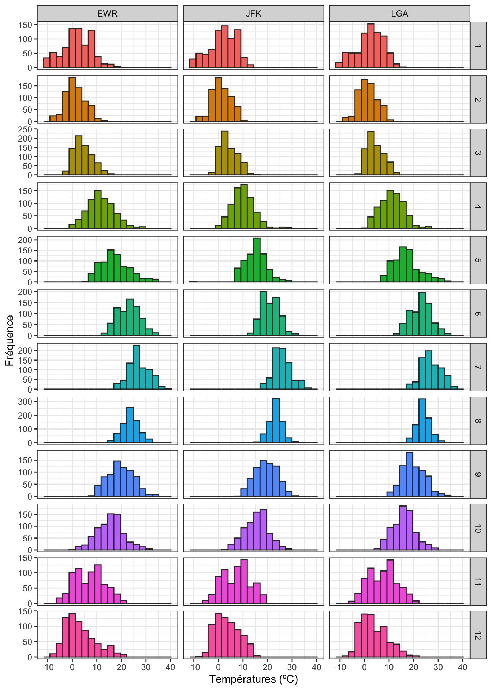
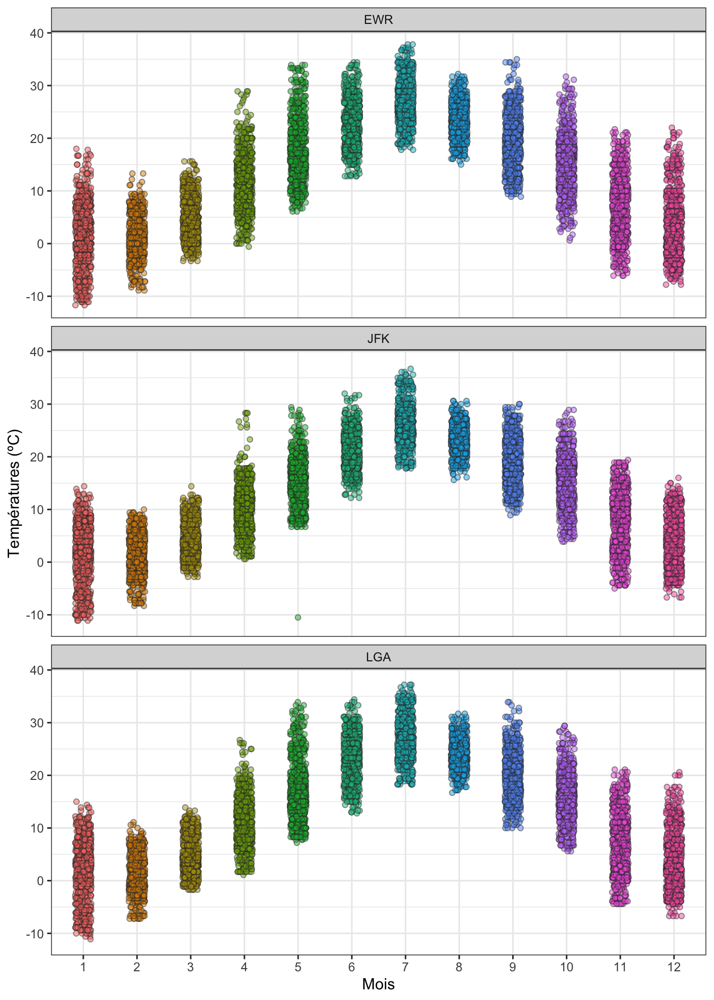
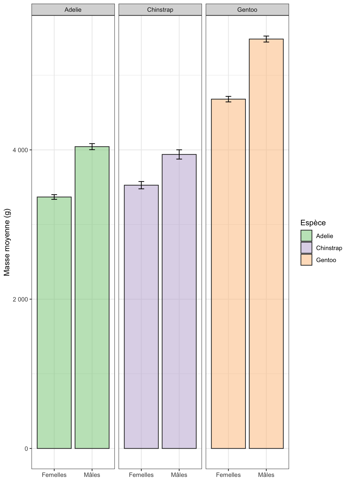
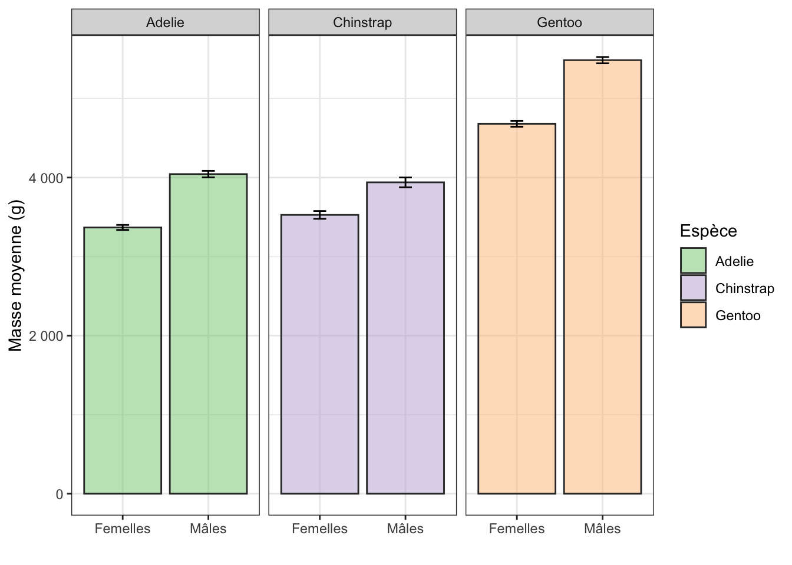
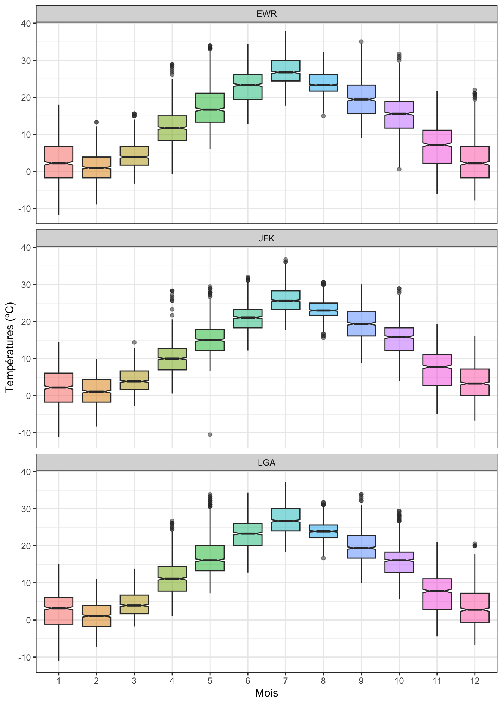
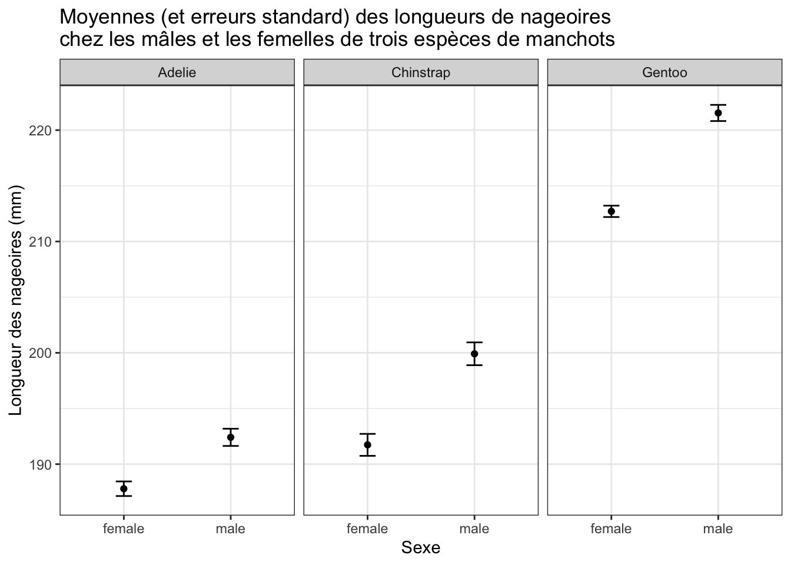

library(tidyverse)
library(palmerpenguins)
library(nycflights13)8.1 Pré-requis
Nous avons ici besoin des packages suivants :
Pensez à les charger en mémoire si ce n’est pas déjà fait ou si vous venez de démarrer une nouvelle session de travail.
Il existe plusieurs façons de représenter visuellement les positions, les dispersions et les incertitudes. Concernant les positions et les dispersions tout d’abord, nous avons déjà vu plusieurs façons de faire au semestre 3, en particulier dans les parties consacrées aux histogrammes, aux stripcharts et aux boxplots. Nous reprenons ici brièvement chacun de ces 3 types de graphique afin de les remettre en contexte avec ce que nous avons appris ici.
Dans un dernier temps, nous verrons comment visualiser l’incertitude associée à des calculs de moyennes ou de variances grâce aux barres d’erreurs ou aux encoches des boîtes à moustaches.
8.2 Position et dispersion : les histogrammes
Je vous renvoie à la partie sur les histogrammes du livre en ligne de biométrie du semestre 3 si vous avez besoin de vous rafraîchir la mémoire. Jetez aussi un œil la partie sur les histogrammes facettés.
Les histogrammes permettent de déterminer à la fois où se trouvent les valeurs les plus fréquemment observées (la position du pic principal correspond à la tendance centrale), et la dispersion (ou variabilité) des valeurs autour de la tendance centrale. Par exemple, la fonction facet_grid() permet de faire des histogrammes des températures pour chaque aéroport de New York et chaque mois de l’année 2013 :
weather |>
mutate(temp_celsius = (temp - 32) / 1.8) |>
ggplot(aes(x = temp_celsius, fill = factor(month))) +
geom_histogram(bins = 20, color = "grey20", show.legend = FALSE) +
facet_grid(factor(month) ~ origin, scales = "free_y") +
labs(x = "Températures (ºC)", y = "Fréquence") +
theme_bw()Warning: Removed 1 rows containing non-finite values (`stat_bin()`).
Ici, 36 histogrammes sont produits. Ils permettent de constater que :
- les températures évoluent à peu près de la même façon dans les 3 aéroports (les 3 colonnes de graphiques se ressemblent beaucoup).
- les températures moyennes sont plus faibles en hiver qu’en été, et qu’elles sont intermédiaires au printemps et à l’automne. C’est bien la position des pics sur l’axe des abscisses qui nous renseigne là-dessus. On sait aussi que les températures moyennes les plus fortes sont autour de 25ºC en juillet, alors que ces mêmes températures moyennes sont proches de 0ºC en janvier, février et décembre.
- la variabilité des températures est comparable pour la plupart des mois de l’année, avec une exception au mois d’août où la dispersion des valeurs semble plus limitée. Cette fois, c’est l’étalement de l’histogramme qui nous renseigne sur la dispersion.
8.3 Position et dispersion : les stripcharts
Une autre façon de visualiser à la fois les tendances centrales et les dispersions consiste à produire un nuage de points “stripchart”. Là encore, je vous renvoie à la partie sur les stripcharts du livre en ligne de biométrie du semestre 3 si vous avez besoin de vous rafraîchir la mémoire.
weather |>
mutate(temp_celsius = (temp - 32) / 1.8) |>
ggplot(aes(x = factor(month), y = temp_celsius, fill = factor(month))) +
geom_jitter(shape = 21, color = "grey20", show.legend = FALSE,
width = 0.15, height = 0,
alpha = 0.5) +
facet_wrap(~ origin, ncol = 1) +
labs(x = "Mois", y = "Températures (ºC)") +
theme_bw()Warning: Removed 1 rows containing missing values (`geom_point()`).
Cette fois, nous visualisons la totalité des données disponibles, et non les données regroupées dans des classes plus ou moins arbitraires. Mais là encore, on peut facilement comparer la position de chaque série de données : pour les mois d’été, les températures sont plus élevées que pour les mois d’hiver. Et la dispersion des données est aussi facile à comparer entre les mois. Par exemple, la variabilité des températures en janvier est nettement supérieure à celle du mois de février. C’est ici l’étendue du nuage de points sur l’axe des ordonnées qui nous permet de le dire.
8.4 Position et dispersion : les boxplots
La dernière façon classique de visualiser à la fois les tendances centrales et les dispersions consiste à produire un graphique boîtes à moustaches, ou “boxplot”. Là encore, je vous renvoie à la partie sur les boxplots du livre en ligne de biométrie du semestre 3 si vous avez besoin de vous rafraîchir la mémoire.
weather |>
mutate(temp_celsius = (temp - 32) / 1.8) |>
ggplot(aes(x = factor(month), y = temp_celsius, fill = factor(month))) +
geom_boxplot(show.legend = FALSE, alpha = 0.5) +
facet_wrap(~ origin, ncol = 1) +
labs(x = "Mois", y = "Températures (ºC)") +
theme_bw()Warning: Removed 1 rows containing non-finite values (`stat_boxplot()`).Vous voyez que le code est très proche pour produire un stripchart ou un boxplot. Comme indiqué au semestre 3, les différents éléments de chaque boîte nous renseignent sur la position et sur la dispersion des données pour chaque mois et chaque aéroport :
- La limite inférieure de la boîte correspond au premier quartile : 25% des données de l’échantillon sont situées au-dessous de cette valeur.
- La limite supérieure de la boîte correspond au troisième quartile : 75% des données de l’échantillon sont situées au-dessous de cette valeur.
- Le segment épais à l’intérieur de la boîte correspond au second quartile : c’est la médiane de l’échantillon, qui nous renseigne sur la position de la distribution. 50% des données de l’échantillon sont situées au-dessus de cette valeur, et 50% au-dessous.
- La hauteur de la boîte correspond à l’étendue (ou intervalle) interquartile ou Inter Quartile Range (IQR) en anglais. On trouve dans cette boîte 50% des observations de l’échantillon. C’est une mesure de la dispersion des 50% des données les plus centrales. Une boîte plus allongée indique donc une plus grande dispersion.
- Les moustaches correspondent à des valeurs qui sont en dessous du premier quartile (pour la moustache du bas) et au-dessus du troisième quartile (pour la moustache du haut). La règle utilisée dans
Rest que ces moustaches s’étendent jusqu’aux valeurs minimales et maximales de l’échantillon, mais elles ne peuvent en aucun cas s’étendre au-delà de 1,5 fois la hauteur de la boîte (1,5 fois l’IQR) vers le haut et le bas. Si des points apparaissent au-delà des moustaches (vers le haut ou le bas), ces points sont appelés “outliers”. On peut en observer ici pour plusieurs mois et pour les 3 aéroports (par exemple, en avril dans les 3 aéroports). Ce sont des points qui s’éloignent du centre de la distribution de façon importante puisqu’ils sont au-delà de 1,5 fois l’IQR de part et d’autre du premier ou du troisième quartile. Il peut s’agir d’anomalies de mesures, d’anomalies de saisie des données, ou tout simplement, d’enregistrements tout à fait valides mais atypiques ou extrêmes ; ll ne s’agit donc pas toujours de point aberrants. J’attire votre attention sur le fait que la définition de ces outliers est relativement arbitraire. Nous pourrions faire le choix d’étendre les moustaches jusqu’à 1,8 fois l’IQR (ou 2, ou 2,5). Nous observerions alors beaucoup moins d’outliers. D’une façons générale, la longueur des moustaches renseigne sur la variabilité des données en dehors de la zone centrale. Plus elles sont longues, plus la variabilité est importante. Très souvent, l’examen attentif des outliers est utile car il nous permet d’en apprendre plus sur le comportement extrême de certaines observations.
Lorsque les boîtes ont une forme à peu près symétrique de part et d’autre de la médiane (c’est le cas pour cet exemple dans la plupart des catégories), cela signifie qu’un histogramme des mêmes données serait symétrique également.
Les stripcharts et les boxplots sont donc un bon moyen de comparer rapidement la position et la dispersion d’un grand nombre de séries de données : ici, en quelques lignes de code, nous en comparons 12 pour chacun des 3 aéroports de New York.
Les histogrammes sont plus utiles lorsqu’il y a moins de catégories à comparer. Ils permettent en outre de mieux visualiser les distributions non symétriques, ou qui présentent plusieurs pics (distribution bi- ou poly-modales).
8.5 Visualiser l’incertitude : les barres d’erreur
Comme évoqué plus haut, il est important de ne pas confondre dispersion et incertitude. Lorsque l’on visualise des moyennes calculées à partir des données d’un échantillon, il est important de faire apparaître des barres d’erreurs, qui correspondent en général :
- soit à l’erreur standard de la moyenne
- soit à l’intervalle de confiance à 95% de la moyenne
Puisque deux choix sont possibles, il sera important de préciser systématiquement dans la légende du graphique, la nature des barres représentées. Commençons par visualiser les températures mensuelles avec les erreurs standards. Pour cela, je reprends le tableau temperatures_se créé précédemment :
temperatures_se |>
ggplot(aes(x = factor(month), y = moyenne)) +
geom_line(aes(group = 1)) +
geom_point() +
geom_errorbar(aes(ymin = moyenne - erreur_standard,
ymax = moyenne + erreur_standard),
width = 0.1) +
facet_wrap(~origin, ncol = 1) +
labs(x = "Mois",
y = "Moyenne des températures quotidiennes maximales (ºC)") +
theme_bw()
Vous remarquerez que :
- j’associe
factor(month), et non simplementmonth, à l’axe desxafin d’avoir, sur l’axe des abscisses, des chiffres cohérents allant de 1 à 12, et non des chiffres à virgule. - l’argument
group = 1doit être ajouté pour que la ligne reliant les points apparaisse. En effet, les lignes sont censées relier des points qui appartiennent à une même série temporelle. Or ici, nous avons transformémonthen facteur. Précisergroup = 1permet d’indiquer àgeom_line()que toutes les catégories du facteurmonthappartiennent au même groupe, que ce facteur peut être considéré comme une variable continue, et qu’il est donc correct de relier les points. - la fonction
geom_errorbar()contient de nouvelles caractéristiques esthétiques qu’il nous faut obligatoirement renseigner : les extrémités inférieures et supérieures des barres d’erreur. Il nous faut donc associer 2 variables à ces caractéristiques esthétiques. Ici, nous utilisonsmoyenne - erreur_stdpour la borne inférieure des barres d’erreur, etmoyenne + erreur_stdpour la borne supérieure. Les variablesmoyenneeterreur_standardfaisant partie du tableautemperatures_se,geom_errorbar()les trouve sans difficulté. - l’argument
widthde la fonctiongeom_errorbar()permet d’indiquer la longueur des segments horizontaux qui apparaissent à chaque extrémité des barres d’erreur.
Ici, bien que moins lisible, on peut aussi faire apparaître les trois courbes sur le même graphique, afin de mieux visualiser les similarités des fluctuations de températures entre les 3 aéroports :
temperatures_se |>
ggplot(aes(x = factor(month), y = moyenne, color = origin, group = origin)) +
geom_line() +
geom_point() +
geom_errorbar(aes(ymin = moyenne - erreur_standard,
ymax = moyenne + erreur_standard),
width = 0.1) +
labs(x = "Mois",
y = "Moyenne des températures quotidiennes maximales (ºC)",
color = "Aéroport") +
theme_bw()
Nous pouvons arriver au même résultats en utilisant le tableau temperature_se_bornes, qui contient des variables différentes :
temperature_se_bornes |>
ggplot(aes(x = factor(month), y = moyenne, color = origin, group = origin)) +
geom_line() +
geom_point() +
geom_errorbar(aes(ymin = moyenne_moins_se,
ymax = moyenne_plus_se),
width = 0.1) +
labs(x = "Mois",
y = "Moyenne des températures quotidiennes maximales (ºC)",
color = "Aéroport") +
theme_bw()
De la même façon, nous pouvons parfaitement faire apparaître, au lieu des erreurs standards, les intervalles de confiance à 95% de chaque valeur de température moyenne. Il nous suffit pour cela d’utiliser le tableau temperatures_ci qui contient les valeurs de moyennes et des bornes supérieures et inférieures de ces intervalles :
temperature_ci |>
ggplot(aes(x = factor(month), y = moyenne, group = 1)) +
geom_line() +
geom_point() +
geom_errorbar(aes(ymin = ci_borne_inf, ymax = ci_borne_sup), width = 0.1) +
facet_wrap(~origin, ncol = 1) +
labs(x = "Mois",
y = "Moyenne des températures quotidiennes maximales (ºC)",
color = "Aéroport") +
theme_bw()Comme vous voyez, les barres d’erreurs sont maintenant plus longues que sur la Figure 8.1. C’est normal car rappelez-vous que les intervalles de confiance sont à peu près équivalents à 2 fois les erreurs standards. L’intérêt de représenter les intervalles de confiance est qu’ils sont directement liés aux tests statistiques que nous aborderons en L3. Globalement, quand 2 séries de données ont des intervalles de confiance qui se chevauchent largement (comme les mois de janvier et février par exemple), alors, un test d’hypothèses conclurait presque toujours à l’absence de différence significative entre les 2 groupes. À l’inverse, quand 2 séries de données ont des intervalles de confiance qui ne se chevauchent pas du tout (comme les mois de mars et d’avril par exemple), alors, un test d’hypothèses conclurait presque toujours à l’existence d’une différence significative entre les 2 groupes. Lorsque les intervalles de confiance entre 2 catégories se chevauchent faiblement ou partiellement (comme entre les mois de juin et juillet pour l’aéroport LGA), la situation est moins tranchée, et nous devrons nous en remettre aux résultats du test pour savoir si la différence observée devrait être considérée comme significative ou non.
8.6 Visualiser l’incertitude : les boîtes à moustaches
Outre les informations de position et de dispersion, les boîtes à moustaches permettent également de visualiser l’incertitude associée aux médianes. Il suffit pour cela d’ajouter l’argument notch = TRUE dans la fonction geom_boxplot() :
weather |>
mutate(temp_celsius = (temp - 32) / 1.8) |>
ggplot(aes(x = factor(month), y = temp_celsius, fill = factor(month))) +
geom_boxplot(show.legend = FALSE, alpha = 0.5, notch = TRUE) +
facet_wrap(~ origin, ncol = 1) +
labs(x = "Mois", y = "Températures (ºC)") +
theme_bw()Warning: Removed 1 rows containing non-finite values (`stat_boxplot()`).
Des encoches ont été ajoutées autour de la médiane de chaque boîte à moustache. Ces encoches sont des encoches d’incertitudes. Les limites inférieures et supérieures de ces encoches correspondent aux bornes inférieures et supérieures de l’intervalle de confiance à 95% des médianes. Comme pour les moyennes, le chevauchement ou l’absence de chevauchement entre les encoches de 2 séries de données nous renseigne sur l’issue probable des futurs tests statistiques que nous serions amenés à réaliser. Il sera donc important de bien examiner ces encoches en amont des tests statistiques pour éviter de faire/dire des bêtises…
8.7 Exercice
- Avec le tableau
penguins, calculez les grandeurs suivantes pour chaque espèce de manchot et chaque sexe :
- la moyenne de la longueur des nageoires
- la variance de la longueur des nageoires
- l’écart-type de la longueur des nageoires
- l’erreur standard de la longueur moyenne des nageoires
- la moyenne de la masse corporelle
- la variance de la masse corporelle
- l’écart-type de la masse corporelle
- l’erreur standard de la masse corporelle moyenne
Attention : pensez à retirer les individus dont le sexe est inconnu.
Vérifiez avec la fonction
skim()que les moyennes et écart-types calculés ci-dessus sont corrects.Avec ces données synthétiques faites le graphique suivant :
